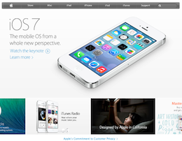

Benefits
Microsites for Museums
Featured : Natural History Museum for Crete
Microsites for Academic institutions
Featured : Michigan State University — Food Safety Knowledge Network(FSKN)
Microsites for Research groups
Featured : Organic.Edunet
Microsites for International organisations
Featured : FAO Capacity Development Portal
Developers
Twitter has updated its iOS app, bringing it up to version 5.1. The update brings a redesign of the look of Conversations within the app. Conversations should now be easier to find, as they are now indicated with a blue line in the Twitter timeline.